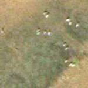

Satellite Images for Environmental Monitoring
Satellite Imaging Corporation (SIC) offers satellite image data by using the combination of panchromatic and multispectral bands to bring out the environment features that are most important to your project. Satellite imagery and GIS maps have greatly expanded opportunities for satellite map data integration, analysis, modeling, and satellite map production for monitoring and assessment. As populations grow, as countries boost their economies, as landscapes change, governments have increasingly relied on up-to-date satellite imagery and other geospatial data for applications such as planning, land registration, disaster response, public health, agricultural biodiversity, conversation, and forestry
Climate Change

Conservation
Change Detection

Natural Disasters

Natural Hazards

Natural Resources